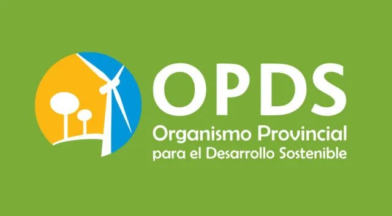
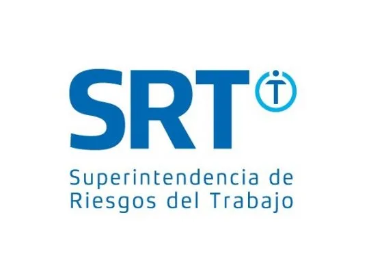

Home
Quiénes Somos
Servicios
Legislación
Contacto
Legislación
Nación
Higiene y seguridad en el trabajo
Ley 19.587
Decreto 351/79
Decreto 1338/96
Ley 24.557
Ley 27.348
Resolución 84/12
Resolución 85/12
Resolución 900/15
Resolución 886/17
Resolución 861/15
Resolución 801/15
Resolución 463/08
Resolución 37/10
Medicina laboral
Ley general del ambiente
Residuos Peligrosos
Provincia de Buenos Aires
Aparatos sometidos a presión
Ruidos molestos
Impacto ambiental
Ley 11.459
Decreto 1741/96
Efluentes gaseosos
Residuos patogénicos - Ley 11.347
Residuos especiales - Ley 11.720
Residuos domiciliarios - Ley 13.592
PCB's
Efluentes líquidos - Dec. 674/89
Efluentes líquidos - Dec. 674/89
Ruidos molestos
Antenas
Ciudad autónoma de Buenos Aires
Residuos peligrosos
Impacto ambiental
Efluentes gaseosos
Contaminación acústica
Entidades Reguladoras

